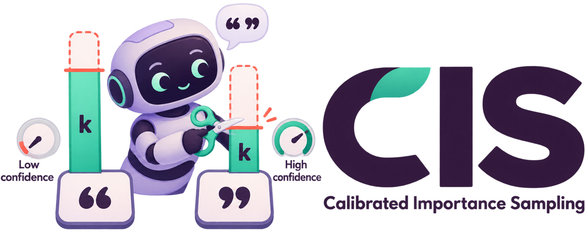
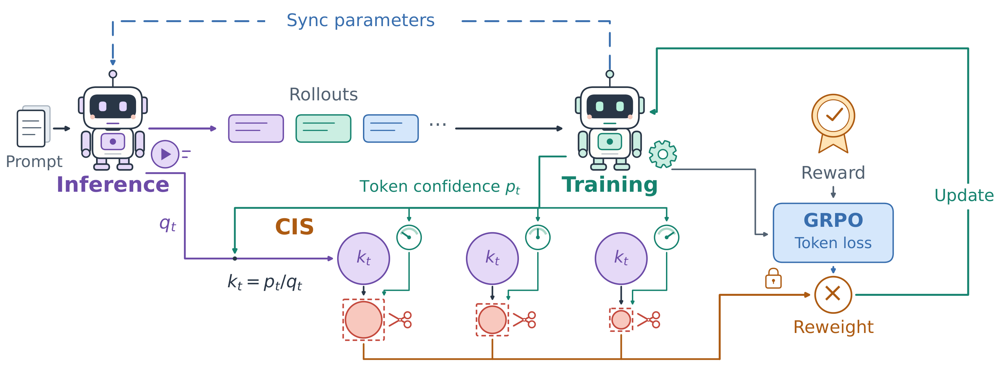
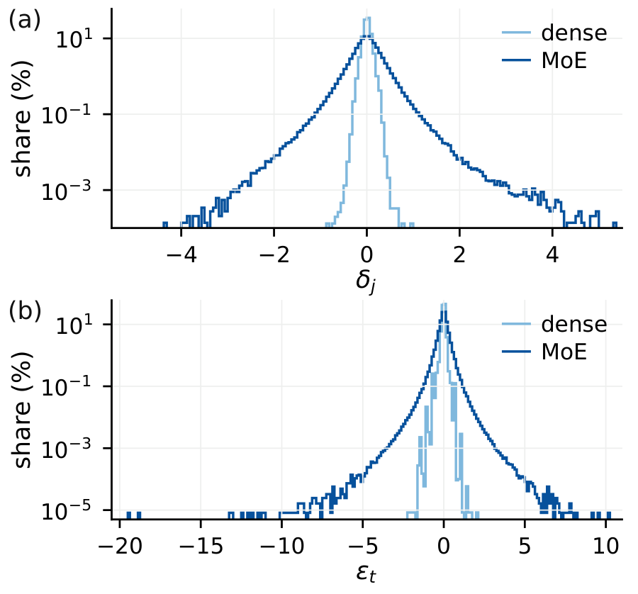
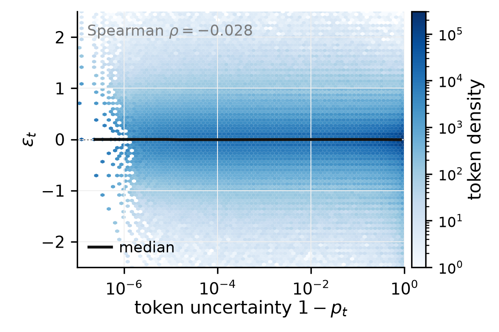
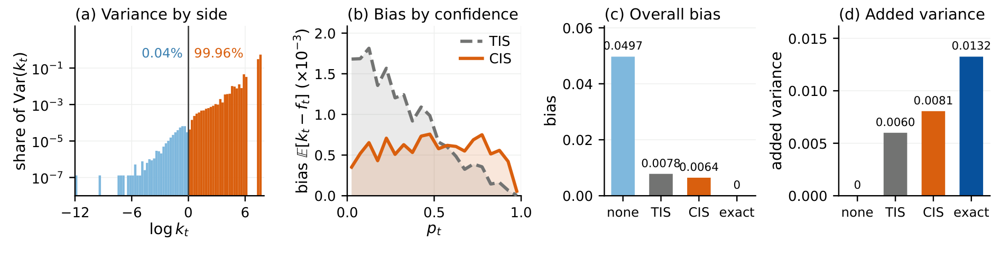
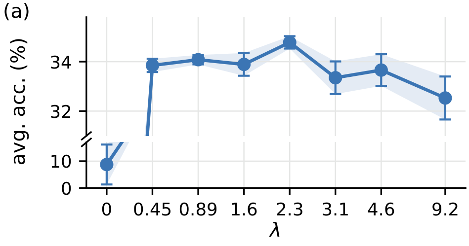
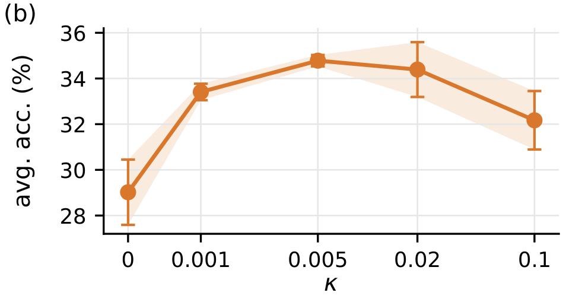

LLM reinforcement learning · training–inference mismatch
Rethinking Training–Inference Mismatch
in LLM Reinforcement Learning
Where it arises and how to correct it
* Corresponding author · tkillian@cs.byu.edu
ADEPT Lab·Brigham Young UniversityThe central idea
A constant shift in log-odds.
A cap that tightens with confidence.
Rollouts come from an inference engine, gradients from a training engine, and the two assign slightly different probabilities to the same token. This mismatch enters the importance ratio as a displacement in log-odds whose scale changes only mildly with token confidence, while the ratio itself is compressed toward one for confident tokens. Calibrated importance sampling (CIS) truncates the displacement at one threshold, which becomes a ratio cap that is tighter for more confident tokens.
- 01Where it arises. A per-logit perturbation before the softmax becomes an additive log-odds displacement, with a heavy tail on mixture-of-experts models.
- 02How to correct it. One threshold on the displacement gives a ratio cap that tightens with confidence, floored at the storage resolution of the log-probabilities.
- 03Why it works. The cap bounds the second moment that makes exact importance sampling unstable, at the cost of a bias controlled by the truncated excess.

01 / Where it arises
The mismatch is a shift in log-odds, not in the ratio.
The two engines compute slightly different logits. For a sampled token with training-side probability $p_t$ and inference-side probability $q_t$, this perturbation reaches the importance ratio $k_t = p_t/q_t$ only through the log-odds displacement $\varepsilon_t = \mathrm{logit}\,p_t - \mathrm{logit}\,q_t$, since $k_t = p_t + (1-p_t)\,e^{\varepsilon_t}$.
The displacement behaves like a common noise source. Its scale changes only mildly with token confidence, whereas the deviation of $k_t$ from one shrinks by orders of magnitude as $p_t \to 1$. On mixture-of-experts models it is heavy-tailed; on a dense control it stays close to zero.


Spread by confidence on Qwen1.5-MoE-A2.7B
Scaled median absolute deviation over 12.2M sampled tokens.
| $p_t$ range | Tokens | MAD$(\varepsilon_t)$ | MAD$(\log k_t)$ |
|---|---|---|---|
| $p_t < 0.5$ | 2,824,021 | 0.156 | $1.15\times10^{-1}$ |
| $0.5$–$0.9$ | 2,337,554 | 0.175 | $3.96\times10^{-2}$ |
| $0.9$–$0.99$ | 1,951,864 | 0.186 | $6.43\times10^{-3}$ |
| $0.99$–$0.999$ | 1,549,915 | 0.203 | $6.78\times10^{-4}$ |
| $p_t > 0.999$ | 3,562,738 | 0.237 | $9.90\times10^{-6}$ |
02 / How to correct it
One threshold in log-odds becomes a confidence-aware cap.
CIS keeps the importance weight unless the displacement is too large. Above the floor, $f_t < k_t$ exactly when $e^{\varepsilon_t} > 1+\lambda$, so every token faces the same threshold in log-odds. A fixed ratio cap such as TIS, $k_t \le C$, instead requires $e^{\varepsilon_t} \le 1 + (C-1)/(1-p_t)$: a threshold that rises without bound as the token becomes confident, so TIS concentrates its truncation on low-confidence tokens.
Explore the two caps
Pick a token's confidence and its log-odds displacement.
$\lambda=2.3$, $\kappa=5\times10^{-3}$. The lower side is never truncated.
Algorithm
One elementwise operation on the two log-probabilities that decoupled PPO and GRPO already keep. No extra forward or backward pass.
p = logp_train.exp()
k = (logp_train - logp_infer).exp()
cap = 1 + lam * (1 - p).clamp(min=kappa)
w = torch.minimum(k, cap).detach() # multiplies the token lossGuarantee
The error of exact importance sampling is governed by the second moment of the ratio, which is unbounded under a heavy-tailed mismatch. CIS replaces this term with one bounded by a constant, at the cost of a bias controlled by the truncated excess $\sum_t (k_t - f_t)$.
The floor $\kappa$ keeps the cap of confident tokens above the storage resolution of the log-probabilities.
03 / Results
The highest five-benchmark average on three MoE models.
RL on GSM8K with one recipe for every method. Held-out accuracy (%) averaged over GSM8K, MATH-500, SVAMP, Minerva Math, and OlympiadBench; mean ± standard deviation over three seeds. The paper compares nine baselines.
| Model | No correction | TIS | Best baseline | CIS |
|---|---|---|---|---|
| Qwen1.5-MoE-A2.7B | 30.99 ± 0.22 | 31.40 ± 2.47 | 34.18 ± 0.55 IcePop | 34.78 ± 0.25 |
| DeepSeek-V2-Lite | 35.83 ± 1.08 | 36.02 ± 0.51 | 36.73 ± 0.73 IcePop | 37.16 ± 0.73 |
| Qwen3-30B-A3B | 68.26 ± 0.27 | 69.14 ± 0.30 | 69.23 ± 0.16 GSPO | 69.88 ± 0.55 |

Sensitivity to $\lambda$ and $\kappa$


Five-benchmark average on Qwen1.5-MoE-A2.7B over three seeds. Every positive threshold outperforms the uncorrected run, while $\lambda=0$, a hard cap at one, collapses. The floor works best near the storage resolution of the log-probabilities.
Resources
Read the paper, run the code.
Use CIS in AReaL
actor:
use_decoupled_loss: true
rejection_sampling:
level: token
action: cis
metric: ratio
cis_lambda: 2.3
cis_kappa: 5.0e-3Reproduce
# patch AReaL at the pinned commit
bash areal_patch/apply_patch.sh
# train with CIS and evaluate on five benchmarks
MODEL=moe SEED=1 bash scripts/train.sh
# measure the mismatch of a model
ARCH=moe bash scripts/measure.shCitation
@article{yu2026rethinking,
title = {Rethinking Training--Inference Mismatch in {LLM} Reinforcement Learning: Where It Arises and How to Correct It},
author = {Yu, Tianrun and Zhao, Kaixiang and Li, Shangzhe and Yang, Yuxiao and Jenkins, Porter and Zhang, Weitong and Killian, Taylor W.},
journal = {arXiv preprint arXiv:2609.32444},
year = {2026}
}